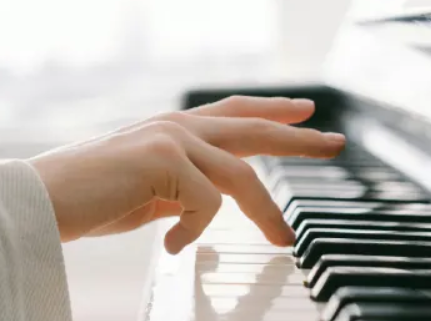
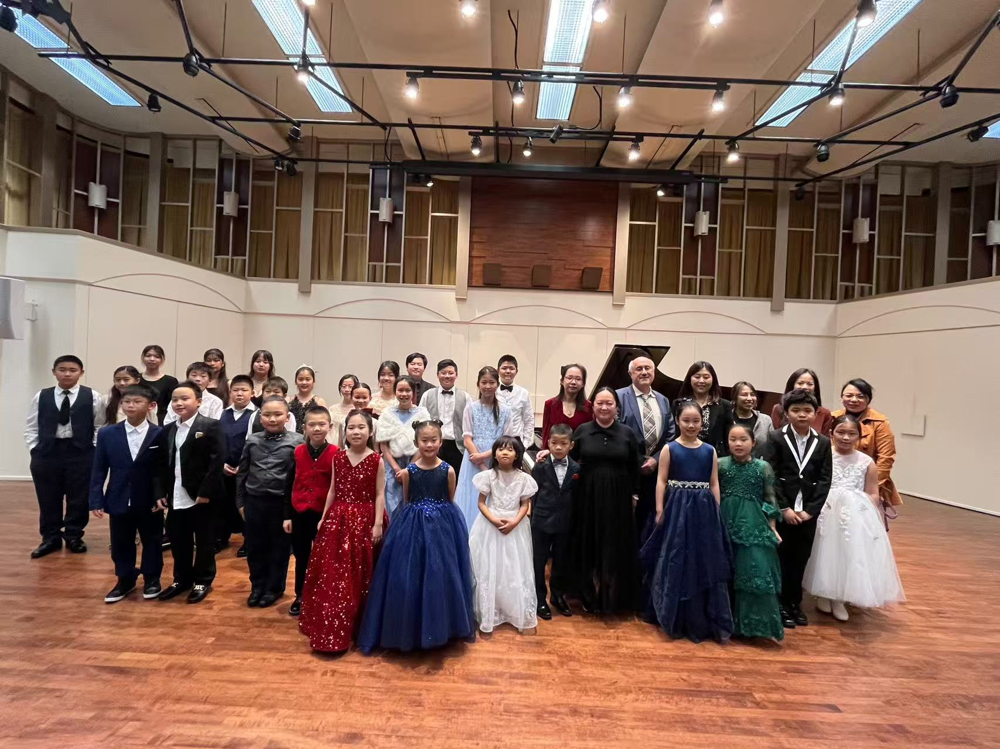

Located in Los Angeles, our piano studio offers professional and patient instruction to students of all ages.
From classical to popular, from basic to advanced, we help each student find their own musical language.
Our Teaching Philosophy
Music learning is a lifelong process, and meaningful progress can happen at any age. Our teaching focuses on
building solid technique, musical understanding, and personal engagement.
Lessons are adapted to each student’s goals and pace. For children, this means healthy foundations.
For adults, piano study supports focus, coordination, and creativity.

About the Instructor
Pat Yu is a dedicated piano instructor with extensive experience in performance and music education.
Trained from a young age, she completed her Bachelor’s program at
California State University, Northridge.
She later served as a Graduate Teaching Assistant at Wichita State University, teaching both group
and private lessons. Her teaching style is structured, patient, and highly individualized.
Professional Recognition & Artistic Engagement
The instructor is a professional teaching artist with the Global Outstanding Chinese Artists Association (GOCAA),
actively involved in international artistic programs and events.

Course Overview
Private Lessons
Group Piano
Professional Coaching
Multiple course approaches
in studio
at home
online